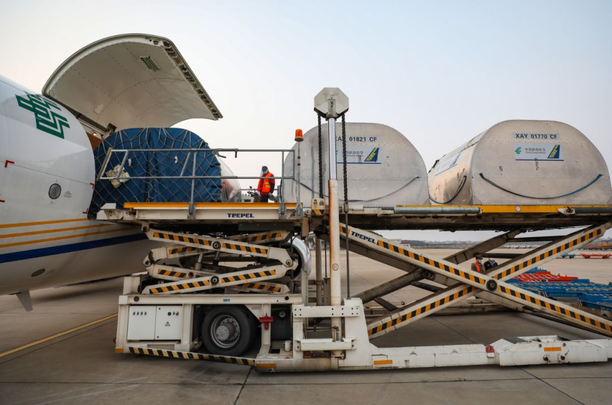
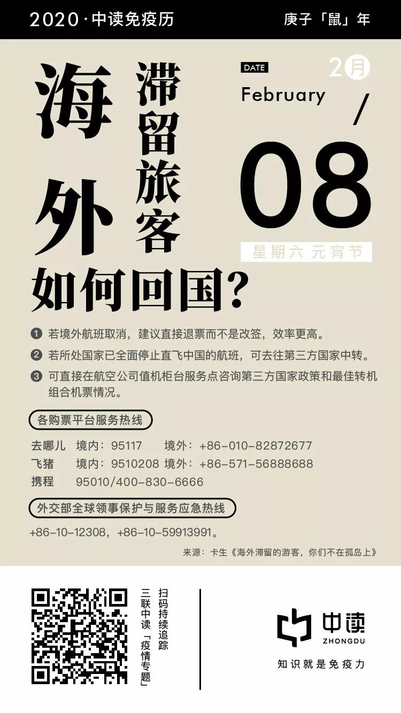

口述实录 | 上海地铁7号线值班站长“丽姐”的一天
原文链接 备份链接 我是值班站长，我更心疼每天在站台、在收银台、在闸口、安检口值守的同事们，如果你问我，他们的父母会担心吗？会害怕吗？我想都会有的，但没有一个人说过，要请假，要退缩，要放弃。 口述| 王丽丽 整理| 吴 雪 大年初十，清 …

春节假期已经结束，各地陆续迎来了返程高峰。相比其他公共交通工具而言，飞机客舱内的空间更封闭，这是否增添了病毒传播的可能性？
武汉天河机场医疗急救中心副主任医师田剑清告诉本刊记者，飞机的垂直空调通风系统可最大程度规避传染病的蔓延。对于普通乘客而言，可以通过飞行前后做好防护准备、配合防疫工作等措施来解决和规避传染风险。
记者 | 李明洁 徐菁菁

空气循环不是主要问题
2003年SARS期间，全球共有35个飞机航班上出现旅客疑似被患有SARS的同行旅客感染的情况，但最后只有4个航班上的疑似病例被确诊，共16人。在2003年的56届世界卫生大会上，世界卫生组织传染病负责人大卫·海曼(David Heymann)强调，这些感染都是在各航空公司采取严格的登机旅客健康状况检查措施之前发生的。
飞机的环境相比火车而言狭小密闭，但其内部有一套复杂特殊的空气循环系统。飞行过波音737等机型的机长陈建国告诉本刊，一般来说，在飞机上，空气从底部被吸出，过滤加压后进入空调系统，经高效微粒过滤Hepa系统过滤。过滤过的空气通过总管道，会像灌溉一样，沿着客舱顶部，每隔3～4排或4～5排的出口排出，整体呈“丰”字型。**这样的空气系统设计，使几排之间形成了较为独立的微循环系统，避免了舱内空气的横向流通。
**

图 | 摄图网
根据民航局有关方面在《国际航空》杂志2013年第7期发表的文章《客舱空气质量相当于手术室——再谈乘坐飞机为什么感染SARS的可能性很小》，Hepa空气滤可以去除空气中99.97%以上的的直径为0.003微米的微粒。新冠肺炎病毒（2019-nCov）的平均直径约为0.1微米。单个病毒、吸附在灰尘等其他颗粒上的病毒群、飞沫，这些形态都在Hepa气滤的作用范围内。
2月2日，民航局印发《关于做好春节返程期间新型冠状病毒感染肺炎疫情防控工作的通知》，力求最大限度地减少疫情通过航空器传播，其中一项就是使用飞机最大通风量。过去，飞机上的空气大约3~5分钟就会全部更换一次。疫情期间，民航总局的要求是通风量开到最大，2-3分钟换一次。这样加速了机舱内空气的垂直流动，使人体呼出的污浊空气停留时间更短。
除了调高换气的频率，一些航空公司也更换了飞机空气再循环系统的气滤网，以提供更清洁的空气。陈建国告诉本刊，不同制造商的飞机与空气再循环系统有着不尽相同的清洁标准，以750小时与7500小时两种循环类别的气滤网为例，对应的日常更换频率是大约两月一换与两年一换。“这与你自己家买的空气净化器的更换频次一样，有的是30天，但有的是90天，最终净化出来的空气都是达标的。”陈建国说：“飞机会采用统一的要求来运行，乘客没有必要去比较气滤网的更换频次。”
特殊时期，特殊措施
除了增大飞机的通风量，在《关于做好春节返程期间新型冠状病毒感染肺炎疫情防控工作的通知》中，民航局还提出了增加消毒频次、调整飞行期间服务流程、督促乘客戴口罩、登机口测温等措施。
在一份书面采访中，东方航空相关负责人告诉本刊，目前，东航所有航空器均执行严格的航后消毒。对于执行航班的飞机，东航要求在地面过站、短停的航空器，必须使用“1452飞机客舱清洗消毒剂”，对客舱内日常需清洁擦拭的部位进行喷洒、擦拭处理。进行航后清洁和深度清洁时，还需要再度深入消毒。

远征 摄
在地面上，东航的摆渡车、客梯车等载客车辆也均要求每4小时消毒一次，而一旦遇到疑似情况，则在使用后即刻对车辆进行消毒。摆渡车的座椅、扶手、车门和客梯车的栏板、扶手、踏板等部位，还将进行重点消毒。车辆使用和消毒完毕后，会在指定区域停放，打开车门、车窗，保持通风。所有的垃圾袋都必须封扎好袋口、进行消毒、然后装入专用回收箱，由指定的专车送到机场指定地点进行停放，交由专业医废处理机构进行处理。垃圾处理完毕后，也要由专人进行严格消毒。机上污水放入污水车箱体后，同样必须按消毒剂浓度配比比例投放消毒液或消毒片、漂白粉进行消毒，消毒时间满2小时后方可进行排放。

远征 摄
武汉天河机场医疗急救中心副主任医师田剑清告诉本刊，飞机在乘客登机以后、抵达目的地或途中非进餐时刻，会根据传染风险程度，有可能喷洒气雾消毒剂消毒。这种消毒剂这个对人体无害，却对病菌有一定杀灭作用，可一定程度上起到减少传染可能性的作用。
根据目前已知的信息，与患者距离较近的密切接触者高度存在被传染的可能性。田剑清告诉本刊记者，飞机的空气微循环系统使3～5排间成为一个相对独立的区域，但并不意味着如果飞机上有患者，只有与他同排、前后三排乘客（宽体飞机可排出间隔再一个走道的乘客）才是密切接触者。为患者近距离服务的机组成员，以及和患者使用了同一卫生间的乘客都可能成为传播风险。而患者有可能在机舱走动，这时全机所有人员都会被视为密切接触者。
为了尽量避免机上可能的病毒的传播，东航方面称，所有的航班人员都必须穿戴好口罩等防护用品再上岗，东航休息室和机上服务也进行了全面梳理调整，严控精简非必要的机供品，消除可能的传播触点。

远征 摄
一些国内航空已经取消了国内航线毛毯等物品的发放，以袋装食品替代以往的热餐，减少机上服务的频次。
如果机上发现疑似病例，机组也会采取特殊措施。田剑清说，乘务员通常会这样做：“1.为疑似者佩戴或加戴口罩、劝阻其随意活动以基础隔离；2.在客舱有空余座位情况下，调整座位，必要时候将其安排到机尾等相宜位置，拉开其与其他乘客距离以实现空间距离隔离；3.为其他没有口罩的乘客提供口罩，引导其他乘客使用其他卫生间等。”
普通旅客防疫指南
除此之外，普通乘客还可以采用哪些防疫措施呢？田剑清给出以下建议：
三联生活周刊：飞行期间乘客与乘务人员都带了口罩，除此之外我们还应该注意什么？
田剑清：戴口罩的确可以很大程度减少飞沫传播的可能性。但是，在就餐、洗脸等时间是必须取下口罩的，这个时候就存在一定的传染可能。
为了解决就餐时脱下口罩可能面临传染的危险，我们建议航空公司在机舱配餐中推行间隔座位、分开时间段就餐的分餐制。旅客洗脸时，强调必须先按照标准洗手超过20秒钟，自我注重卫生间清理。
三联生活周刊：乘客尽量避免在飞机上进食、如厕是必要的防护措施吗？
田剑清：短途飞行，的确可以通过飞行前后就餐的方式来减少暴露。长途越洋跨洲飞行，则不主张飞行中挨饿，应该按照机组安排实行分时隔位分餐制，即减少暴露，也避免挨饿于身体不利。
此外，患有低血糖和糖尿病胰岛素分泌失衡等疾病患者，应该按照疾病治疗需要，向机组表明患病情况，保证及时就餐，以及根据临床医生意见科学及时用药。
三联生活周刊：接触行李、货物是否有感染的风险？
田剑清：有报道称，在患者接触过的门把手检测到了病毒核酸，新型冠状病毒感染性肺炎被证实存在接触传染。但是，李兰娟院士表示，只要坚持勤洗手和按标准洗手，是可以避免不戴手套而导致一般性物品接触传染的。因此，我们不必为接触物品以及托运行李而太过恐慌。
三联生活周刊：自身免疫能力较弱的人，是否应当被建议更少地乘坐公共交通工具？
田剑清：在传染病肆虐的情况下，体弱多病、抵抗力低下的人群，的确更应该减少出行。
三联生活周刊：如果在飞行期间感到不适，应该寻求哪些医疗援助呢？
田剑清：生病旅客在购票前应该仔细阅读航空公司的申明，在身体健康不适的情况下应该根据临床医生的建议来决定是否进行航空旅行。部分航司还要求高龄和重疾、无陪、行动不便学生旅客，提供健康报告或医生近日的病历或医嘱建议，评估后才予以承运。
另外，疾病是动态发展的，出院时评估或许可以乘机旅行，但登机时依然可能由于熬夜、搬运行李、赶飞机、未按时按量服用药物等原因而健康状况不佳，航空旅行有可能会被临时减舱拒载。如果出现这种情况，疾病患者应该予以接受和理解，因为生命健康才是最宝贵的。

《内在美》剧照
因此，应尽量避免独自一人抱病乘机旅行，应与熟悉自己病情和处置措施的亲友一起乘机旅行。在乘机前，应该充足睡眠，保持旺盛精力，尽量减少乘机前后不必要的体力耗损，如长时间长距离背着远超手提行李重量额度的背包登机等。记着将按时服用的药物和必备的应急药物随身携带，飞行途中按规定按时服药。在途中如感觉不适，应及时向服务员求助和表明病情，必要时机组会采取相宜措施给予救助。
三联生活周刊：在没有条件做有效隔离的情况下，如果发现疑似病例，邻近的乘客应该怎样保护自己呢？
田剑清：乘客发现身边有人有发热、咳嗽等呼吸系统症状，应该在自己佩戴好口罩（有眼罩、手套也宜戴上）；如没有口罩可用手臂遮挡，或竖立衣领、戴好衣帽的同时扭头，避免其飞沫传染；有多余口罩时给予其口罩，让其佩戴以初步隔离；没有多余口罩时，可扭头低声劝其暂用手臂或纸巾遮挡口鼻；报告机组人员相关情况；在航空器不颠簸的情况下可走到其他位置拉开距离。
三联生活周刊：如果发现某航班存在疑似病例，同机的乘客会被跟踪多久？
田剑清：一般是按疾病的潜伏发病时间，从和疑似患者分开的时刻算起，通常是14天。

⊙文章版权归《三联生活周刊》所有，欢迎转发到朋友圈，转载开白请联系后台。未经同意，严禁转载至网站、APP等。
点击下图，一键下单「*年里美味***」
**
买它！
▼ 点击阅读原文，进入周刊书店，购买更多好书。
原文链接 备份链接 我是值班站长，我更心疼每天在站台、在收银台、在闸口、安检口值守的同事们，如果你问我，他们的父母会担心吗？会害怕吗？我想都会有的，但没有一个人说过，要请假，要退缩，要放弃。 口述| 王丽丽 整理| 吴 雪 大年初十，清 …
原文链接 备份链接 中国科学院心理研究所的研究员高文斌，是2003年北京小汤山“SARS患者与医护人员的心理干预”项目和“中科院心理所非典心理咨询热线”的负责人。 在接受本刊采访时，他认为，这次新冠疫情，尤其需要加强社会层面的心理引导和 …
原文链接 备份链接 除夕夜，我跟儿子开了视频电话。他才7岁，不太懂现在外面发生了什么，为什么自己不能出去玩。他喜欢玩游戏，我就告诉他，外面有很多病毒，病毒就是一种怪兽，妈妈在外面打怪兽。然后他说，“妈妈，我要去你那里，跟你一起去打怪兽！” …
原文链接 备份链接 1 农历二十九。去药店，排队买口罩。 前面一位五十多岁、身穿墨绿色工作服的大叔，从胸前的口袋里掏出一个信封，倒出一堆折叠得方方正正的纸块。展开一个个纸块，现出一张张二十元、十元、五元的纸币。 有种看穿越剧的错觉。之后， …
原文链接 备份链接 8个关键词，构成了2020年1月这场牵涉全国疫情的一个侧面——一个个普通人，是如何度过了这个特殊的一月。 这次月度总结，我们决定记录一些疫情中令人啼笑皆非的小新闻，因为，这些看似微不足道的切片，构成了每个人在大事件中的 …